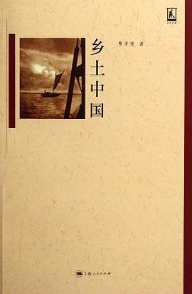
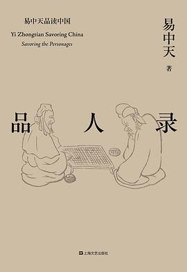
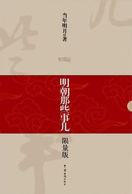

文学类

《乡土中国》
豆瓣评分：9.2
乡土社会在地方性的限制下成了生于斯、死于斯的社会。常态的生活是终老是乡。假如在一个村子里的人都是这样的话，在人和人的关系上也就发生了一种特色，每个孩子都是在人家眼中看着长大的，在孩子眼里周围的人也是从小就看惯的。这是一个“熟悉”的社会，没有陌生人的社会。

《品人录》
豆瓣评分：7.9
专制制度与道德原则背道而驰。道德原则要求独立思考，专制制度要求绝对服从；道德原则要求自由选择，专制制度要求依附他人。一个只知依附与服从的人是不会有什么道德上的良心和责任的。当所有的人都被要求服从和依附于他人时，所谓是非善恶的判断最终只不过是上级和君王一己的好恶。更何况，把自己的意志强加于他人，把他人的人格践踏于脚下，这本身就不道德。

《明朝那些事儿》
豆瓣评分：9.1
因为天真的理想主义者纵使执着、纵使顽强，却依然是软弱的。他们并不明白，在这世上，很多事情你可以不理解，却必须接受。 只有真正了解这个世界的丑陋与污浊，被现实打击，被痛苦折磨，遍体鳞伤、无所遁形，却从未放弃对光明的追寻，依然微笑着，坚定前行的人，才是真正的勇者。 不经历黑暗的人，是无法懂得光明的。

《白夜行》
豆瓣评分：9.1
我的天空没有太阳，总是黑夜，但并不暗，因为有东西代替了太阳。虽然没有太阳那么明亮，但对我来说已经足够。凭借这份光，我便能把黑夜当成白天。我从来就没有太阳，所以不怕失去。